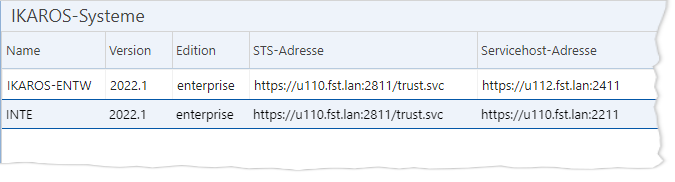

TEXT SCRAMBLING in TRIAL VERSION OUTPUT! In evaluation mode, Help+Manual will scramble individual characters in random words in your published output files. This is a limitation of the free trial version. This help system was created with an evaluation copy of Help+Manual.
Zusammenhänge
Das TRMS ist eine von IKAROS architektonisch getrennte Anwendung mit eigenen Servern und eigener Web-Oberfläche. Daher müssen Sie im TRMS Stammdaten für IKAROS-Systeme verwalten, die in der Oberfläche des TRMS als Quell- oder Zielsysteme angeboten werden sollen. Für jedes IKAROS-System müssen Sie einen eindeutigen Namen sowie die URLs zum Anwendungs- und Authentifizierungs-Server des Systems angeben.
Das Anlegen und Bearbeiten von Systemstammdaten setzt voraus, dass sich der aktuelle Nutzer mit seinen eigenen Daten oder mit abweichendem Nutzername und Passwort an dem jeweiligen System anmelden kann.
Falls noch gar kein IKAROS-System im TRMS angelegt ist, erscheint bei der ersten Aktion, die eine Anmeldung erfordert, automatisch der Bearbeitungsdialog für IKAROS-Systeme [Link], mit dem Sie den ersten Systemeintrag anlegen können.
Die Verbindungsdaten für TRMS-Systeme werden separat im Menüpunkt [Administration -> TRMS-Systeme] verwaltet [Link].
Benutzer in IKAROS-Zielsystem erforderlich
Es genügt für einen Transport nicht, nur ein neues IKAROS-System im TRMS hinzufügen. Damit das TRMS überhaupt auf die Dienste dieses Zielsystems zugreifen darf, muss es in der Benutzerverwaltung des Zielsystems einen eigenen IKAROS-Benutzer mit den erforderlichen Rechten für den technischen „AppPool-Benutzer“ des TRMS geben UNREGISTERED EVALUATION VERSION.
Bei Mehrfirmenbetrieb in den IKAROS-Umgebungen müssen Sie beachten, dass Sie für jede Geschäftseinheit einen separaten „IKAROS-System“-Eintrag im TRMS brauchen. Außerdem müssen Sie, wegen der getrennten Datenbanken der Geschäftseinheiten, auch die Rechte-Rollen und -Ressourcen einzeln in der jeweiligen Geschäftseinheit konfigurieren.
Die Auswahlliste
Sie finden Sie Stammdaten für IKAROS-Systeme im TRMS unter [Administration -> IKAROS-Systeme].

Abb. 35: Die Liste der „Systeme“-Stammdaten
Schaltflächen
Symbol |
Schaltfläche |
Beschreibung |
|---|---|---|
|
„Neu“ [Einfg] |
Öffnet den Bearbeitungsdialog für Systeme, um die Verbindungsdaten zu einem weiteren IKAROS-System zu speichern. |
|
„Filtern“ [Leertaste] |
Ruft den Filterdialog für die Auswahlliste auf. |
|
„Aufheben“ [Strg] + [R] |
Hebt die aktuellen Filtereinstellungen auf. |
|
„Sichten“ [F6] |
Ruft den Verwaltungsdialog für benutzerdefinierte Sichten auf. |
|
„Cache leeren“ [F10] |
Setzt den Stammdaten-Cache des TRMS zurück. Dies ist nur notwendig, wenn Sie direkt per SQL Änderungen an den „Systeme“-Stammdaten oder TRMS-Systemeinstellungen vorgenommen haben. |